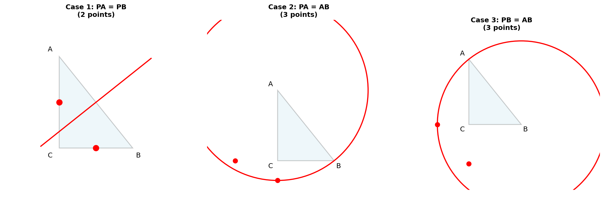

🎯 题目
在 Rt△ABC 中，∠C=90°，∠A≠30°，∠A≠45°，
在直线 BC 或 AC 上取一点 P，
使得△PAB 是等腰三角形，
则符合条件的点 P 有多少个？
1
理解题意
△PAB 是等腰三角形有三种情况：
情况1
PA = PB
P在AB垂直平分线上
情况2
PA = AB
以A为圆心，AB为半径
情况3
PB = AB
以B为圆心，AB为半径

2
分类讨论

情况1：PA = PB
AB的垂直平分线与直线AC交于1点，与直线BC交于1点
共2个点
情况2：PA = AB
以A为圆心的圆与直线AC交于2点，与直线BC交于1点（B点舍去）
共3个点
情况3：PB = AB
以B为圆心的圆与直线AC交于1点（A点舍去），与直线BC交于2点
共3个点
3
最终答案

总计
2 + 3 + 3 = 8
8个点
注意：题目条件∠A≠30°且∠A≠45°是为了避免某些特殊情况下的点重合。在一般情况下，8个点互不重合。
4
总结
🎯 解题思路
- 分类讨论三种等腰情况（PA=PB, PA=AB, PB=AB）
- 情况1：垂直平分线与两直线交于2点
- 情况2：以A为圆心的圆与两直线交于3点
- 情况3：以B为圆心的圆与两直线交于3点
- 总计：2 + 3 + 3 = 8个点
💡 解题技巧
- 看到等腰三角形 → 立即分类讨论三种情况
- 看到"直线" → 注意可以在延长线上
- 数形结合 → 用圆和垂直平分线找点
- 验证重合 → 考虑特殊角度是否会导致点重合